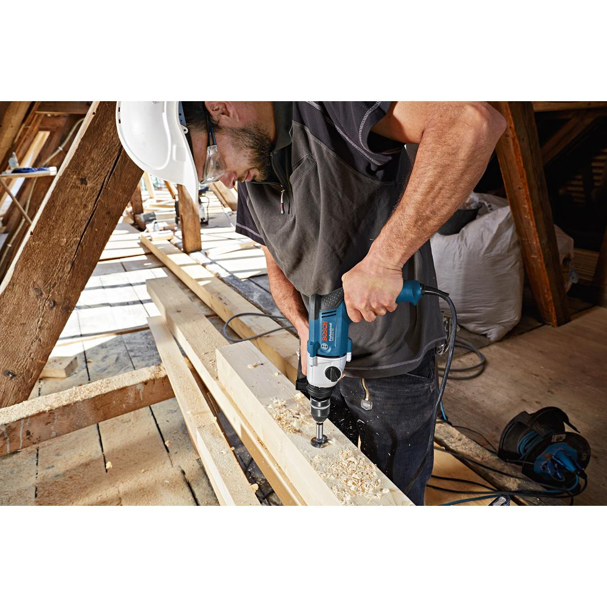
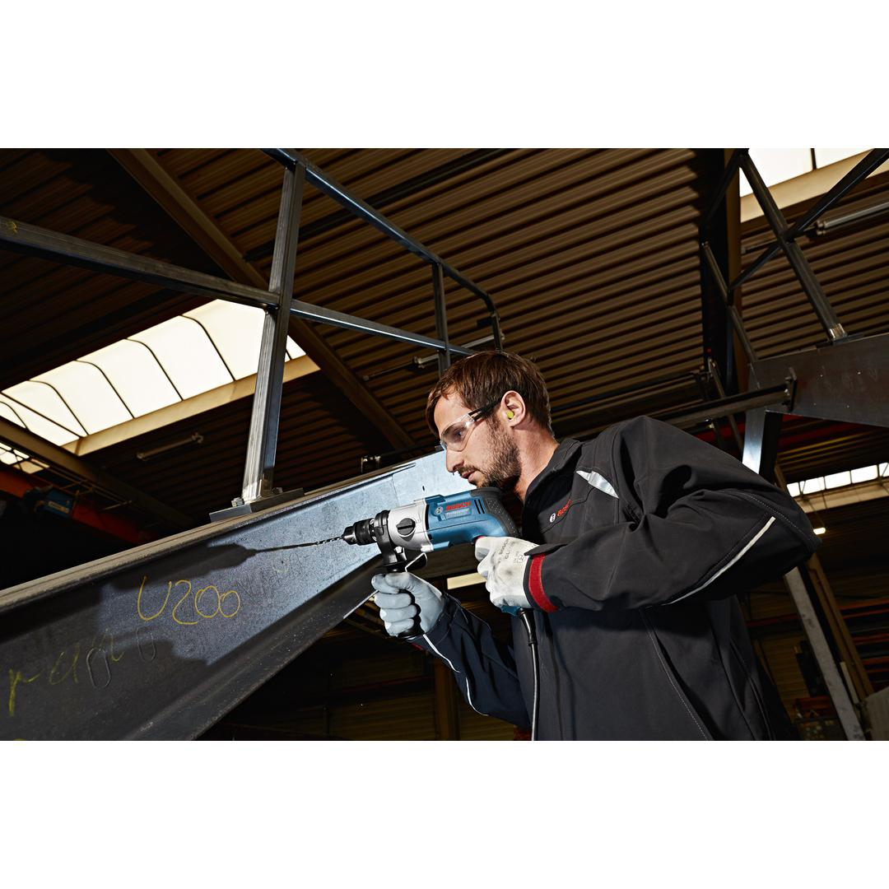
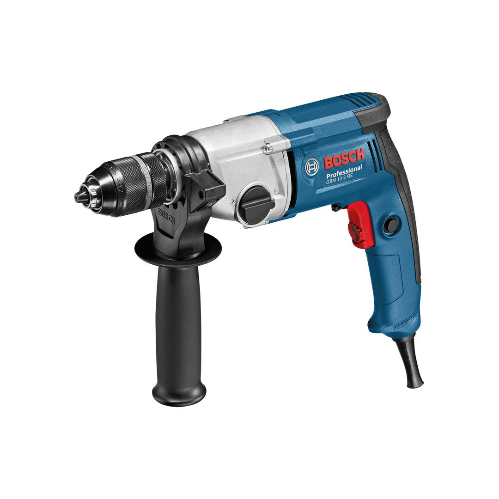
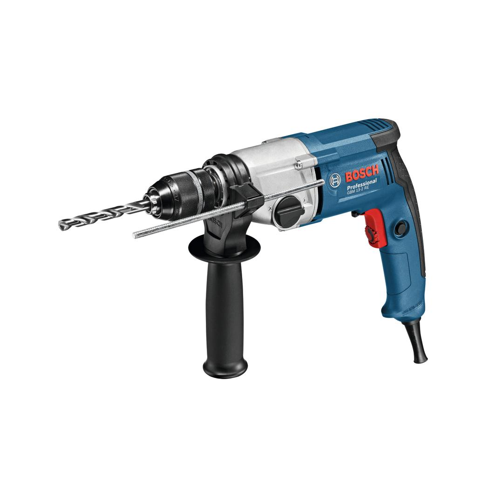

06011B2000





The GBM 13-2 RE Professional is a corded 2-geared rotary drill designed for precision drilling. Its powerful 750 W motor and high torque deliver fast work progress, enabling the drilling of holes in steel of up to 13 mm in diameter. It features a compact and ergonomic design providing good tool handling for precise work. This rotary drill also features a 2-speed gearbox and a speed preselection setting wheel for accurate performance in versatile applications.
| Rated input power |
750 W |
| No-load speed, 1st gear |
0 – 1,000 rpm |
| No-load speed, 2nd gear |
3,200 rpm |
| Power output |
353 W |
| Weight |
2.4 kg |
| Rated speed |
500 / 1,750 rpm |
| Rated torque |
6.8 / 2.5 Nm |
| Drill spindle connecting thread |
1/2"-20 UNF |
| Max. torque |
39.5 / 12.5 Nm |
| Drill chuck, version |
Keyless chuck |
| Voltage, electrical |
230 V |
| Spindle collar diameter |
43 mm |
| Bit holder |
1/2"-20 UNF |
2-geared rotary drill for precision work
This tool is intended for drilling in metal and wood.
The GBM 13-2 RE Professional includes the option of selecting 1 out of 3 different chucks, and features right-left rotation, rotation control clutch, and speed selection, as well as variable speed.